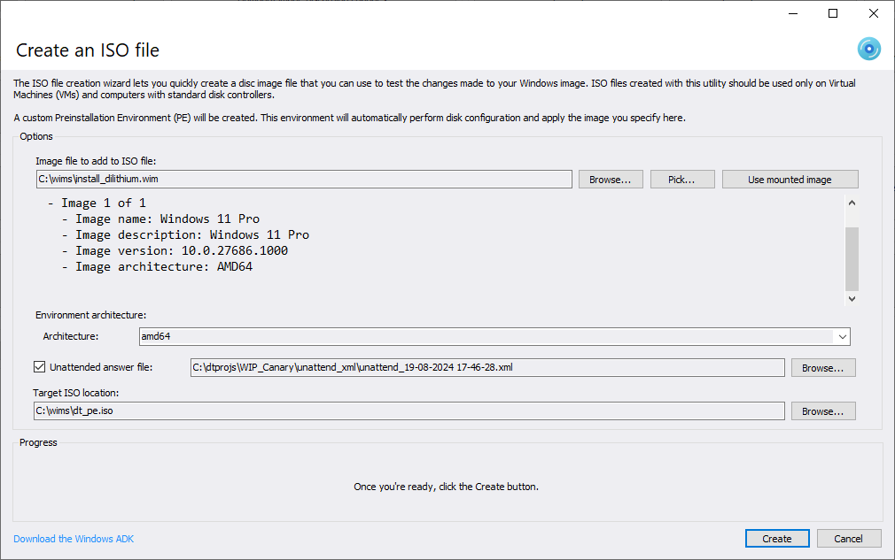

Testing your Windows images with the ISO creation tools

If you want to test the changes made to a Windows image, you can easily do so with the ISO creation tools, which include the ISO creator and the Preinstallation Environment (PE) Helper.
You will need the Windows Assessment and Deployment Kit (ADK), which you can download using the convenient link on the bottom left.
This tool is available in DISMTools 0.5
Usage
To create a new ISO file, do the following:
- Pick your Windows image. You can either browse through your computer for a Windows image to copy, pick an image from the pop-up mounted image picker, or pick the currently loaded one. Once you pick a Windows image, you will see information about each index in the image
- Choose the architecture for the Preinstallation Environment by using the architecture list. It is recommended to pick the one that the image supports
- Choose the target location of the ISO file. If the target image exists, you will be asked if you want to replace it when clicking Create
This process can take between 5 to 10 minutes, depending on the size of the Windows image and the speed of your computer's disk drive.
The Preinstallation Environment (PE) Helper
All ISO creation and OS installation procedures are performed by a script known as the Preinstallation Environment (PE) Helper. This has 2 modes: environment generation and OS installation.
Environment generation
The PE Helper will do the following during this phase:
- Copy PE files to a temporary directory in the program files directory
- Mount the Windows PE image
- Copy operating system packages to the temporary directory
- Add the following packages: .NET Framework (
WinPE-NetFx), WMI support (WinPE-WMI), PowerShell (WinPE-PowerShell) and Deployment Image Servicing and Management (DISM) cmdlets (WinPE-DismCmdlets) - Perform the following customizations: set up a custom wallpaper, configure startup and command prompt settings and scratch space
- Save changes and unmount the WinPE image
- Copy the source image file to test
- Copy scripts, including the PE Helper
- Create the ISO file
OS installation
During OS installation, the PE helper will do the following:
- Ask you what disk and partition will be used for OS installation
- Write disk configuration tailored to the system configuration (BIOS/UEFI)
- Ask you the index of the source image to apply
- Apply the source image
- Run serviceability tests
- Create boot files tailored to the system configuration (BIOS/UEFI)
- Reboot your system
Serviceability tests
Serviceability tests are performed during OS installation to make sure that the image that has been applied is valid. They are only run if the architectures of the PE and the image are the same, and must pass in order to successfully complete the installation of the operating system.
If these tests fail, you may need to repair the component store of your Windows image.
Remarks
- Please make sure to commit your unsaved changes to your image before creating the ISO file